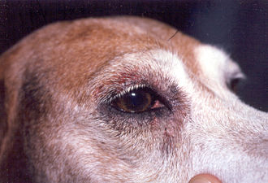

PET DOGS

Mdl:Dilsukhnagar Dist: Rangareddy City:Hyderabad pinno.:500060
 HOME
IMAGES
SERVICES
ORIGIN
HEALTH
BEHAVIOR
CONTACTS
HOME
IMAGES
SERVICES
ORIGIN
HEALTH
BEHAVIOR
CONTACTS
HOME
IMAGES
SERVICES
ORIGIN
HEALTH
BEHAVIOR
CONTACTS
HOME
IMAGES
SERVICES
ORIGIN
HEALTH
BEHAVIOR
CONTACTS
Several human foods and household ingestibles are toxic to dogs, including chocolate solids (theobromine poisoning), onion and garlic (thiosulphate, sulfoxide or disulfide poisoning),[55] grapes and raisins, macadamia nuts, xylitol,[56] as well as various plants and other potentially ingested materials.[57][58] The nicotine in tobacco can also be dangerous. Dogs can be exposed to the substance by scavenging through garbage bins or ashtrays and eating cigars and cigarettes. Signs can be vomiting of large amounts (e.g., from eating cigar butts) or diarrhea. Some other symptoms are abdominal pain, loss of coordination, collapse, or death.[59] Dogs are susceptible to theobromine poisoning, typically from the ingestion of chocolate. Theobromine is toxic to dogs because, although the dog's metabolism is capable of breaking down the chemical, the process is so slow that for some dogs, even small amounts of chocolate can be fatal, mostly dark chocolate.
Many household plants are poisonous to dogs (and other mammals), including Begonia, Poinsettia, and Aloe vera.[54]
Dogs are also vulnerable to some of the same health conditions as humans, including diabetes, dental and heart disease, epilepsy, cancer, hypothyroidism, and arthritis.[60]
In 2013, a study found that mixed breed dogs live on average 1.2 years longer than purebred dogs. Increasing body-weight was negatively correlated with longevity (i.e., the heavier the dog, the shorter its lifespan).[61]
Some breeds of dogs are prone to specific genetic ailments such as elbow and hip dysplasia, blindness, deafness, pulmonic stenosis, cleft palate, and trick knees. Two severe medical conditions significantly affecting dogs are pyometra, affecting unspayed females of all types and ages, and gastric dilatation volvulus (bloat), which affects the larger breeds or deep-chested dogs. Both of these are acute conditions and can kill rapidly. Dogs are also susceptible to parasites such as fleas, ticks, mites, hookworms, tapeworms, roundworms, and heartworms (roundworm species that lives in the heart of dogs).
The typical lifespan of dogs varies widely among breeds, but for most, the median longevity, the age at which half the dogs in a population have died, and half are still alive, ranges from 10 to 13 years.[62][63][64][65] Individual dogs may live well beyond the median of their breed.
The breed with the shortest lifespan (among breeds for which there is a questionnaire survey with reasonable sample size) is the Dogue de Bordeaux, with a median longevity of about 5.2 years. Still, several breeds, including miniature bull terriers, bloodhounds, and Irish wolfhounds are nearly as short-lived, with median longevities of 6 to 7 years.[65]
The longest-lived breeds, including toy poodles, Japanese spitz, Border terriers, and Tibetan spaniels, have median longevities of 14 to 15 years.[65] The median longevity of mixed-breed dogs, taken as an average of all sizes, is one or more years longer than that of purebred dogs when all breeds are averaged.[63][64][65][66] The longest-lived dog was "Bluey," an Australian Cattle Dog who died in 1939 at 29.5 years of age.[67][68]
In domestic dogs, sexual maturity happens around six to twelve months of age for both males and females,[17][69] although this can be delayed until up to two years old for some large breeds, and is the time at which female dogs will have their first estrous cycle. They will experience subsequent estrous cycles semiannually, during which the body prepares for pregnancy. At the peak of the cycle, females will become estrus, mentally, and physically receptive to copulation.[17] Because the ova survive and can be fertilized for a week after ovulation, more than one male can sire the same litter.[17]
Fertilization typically occurs 2–5 days after ovulation; 14–16 days after ovulation, the embryo attaches to the uterus, and after 7-8 more days, the heartbeat is detectable.[70][71]
Dogs bear their litters roughly 58 to 68 days after fertilization,[17][72] with an average of 63 days, although the length of gestation can vary. An average litter consists of about six puppies,[73] though this number may vary widely based on dog breed. In general, toy dogs produce from one to four puppies in each litter, while much larger breeds may average as many as twelve.
Some dog breeds have acquired traits through selective breeding that interfere with reproduction. Male French Bulldogs, for instance, are incapable of mounting the female. For many dogs of this breed, the female must be artificially inseminated to reproduce.[74]
Neutering refers to the sterilization of animals, usually by removing the male's testicles or the female's ovaries and uterus, to eliminate the ability to procreate and reduce sex drive. Because of dogs' overpopulation in some countries, many animal control agencies, such as the American Society for the Prevention of Cruelty to Animals (ASPCA), advise that dogs not intended for further breeding should be neutered. That way, they do not have undesired puppies that may later be euthanized.[75]
According to the Humane Society of the United States, 3–4 million dogs and cats are euthanized each year. Many more are confined to cages in shelters because there are many more animals than there are homes. Spaying or castrating dogs helps keep overpopulation down.[76] Local humane societies, SPCAs, and other animal protection organizations urge people to neuter their pets and adopt animals from shelters instead of purchasing them.
Neutering reduces problems caused by hypersexuality, especially in male dogs.[77] Spayed female dogs are less likely to develop cancer, affecting mammary glands, ovaries, and other reproductive organs.[78] However, neutering increases the risk of urinary incontinence in female dogs,[79] and prostate cancer in males,[80] and osteosarcoma, hemangiosarcoma, cruciate ligament rupture, obesity, and diabetes mellitus in either sex.[81]
Skin diseases are very common in dogs. Atopy, a chronic allergic condition, is thought to affect up to 10 percent of dogs.[18] Other skin diseases related to allergies include hot spots and pyoderma, both characterized by secondary bacterial infections, food allergy, ear infections, and flea allergy dermatitis. Canine follicular dysplasia is an inherited disorder of the hair follicles resulting in alopecia (baldness). Mange is an infectious skin disease caused by mites. Endocrine diseases such as hypothyroidism and Cushing's syndrome can also manifest as skin problems like alopecia or recurring bacterial infections. Another class of integumentary malady is hygromas, a swelling typically on or near the elbow joint. Nutrition may also play a role in skin disease, as deficiencies in certain nutrients may result in scaling, redness, oiling, balding, and/or itching of the skin.[19](See dog skin disorders for specific nutrients that impacts skin)
Physical elements of certain dog breeds also affect susceptibility of individuals to skin problems, such as wrinkled skin or excessive skin folds. For instance, skin-fold dermatitis is a skin infection more prevalent in breeds such as the bulldog, cocker spaniel, and English Springer spaniel.[19]
Orthopedic diseases in dogs can be developmental, hereditary, traumatic, or degenerative. Because of the active nature of dogs, injuries happen frequently. One of the most common of these is an anterior cruciate ligament injury, a condition which often requires surgery. Bone fractures are a frequent occurrence in outdoor dogs due to trauma from being hit by cars. Degenerative joint disease is common in older dogs and is one of the most likely reasons for prescription of non-steroidal anti-inflammatory drugs.
Hereditary orthopedic diseases are mainly found in purebred dogs. Hip dysplasia is a common problem that primarily affects larger breeds. Hip dysplasia is a defect in the shape of the hip joint which can, depending on the degree of hip luxation, be quite painful to the dog as it ages. Over time it often causes arthritis in the hips. Dysplasia can also occur in the elbow joint. Luxating patellas can be a problem for smaller breeds. It can cause lameness and pain in the hind legs.
Developmental orthopedic diseases include panosteitis and hypertrophic osteodystrophy. Panosteitis occurs in large and giant breed dogs usually between the age of five and fourteen months and manifests as fever, pain, and shifting leg lameness. Hypertrophic osteodystrophy is also seen in young large and giant breed dogs and is characterized by pain, lameness, fever, and swelling of the long bone metaphysis.